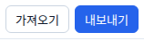
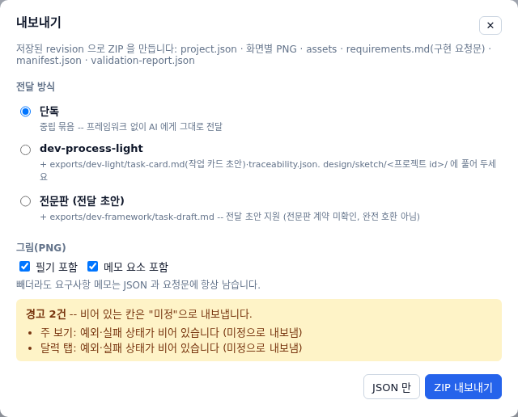
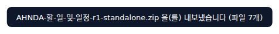
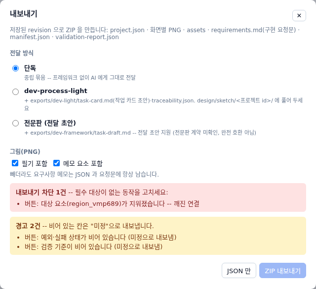
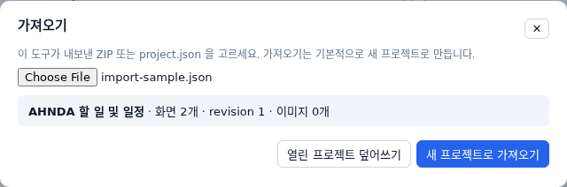
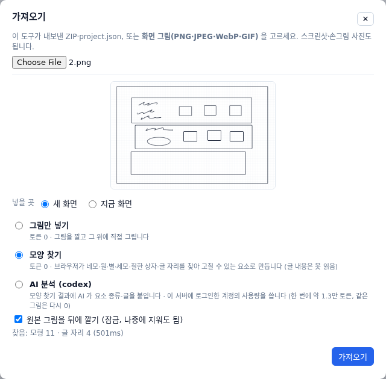
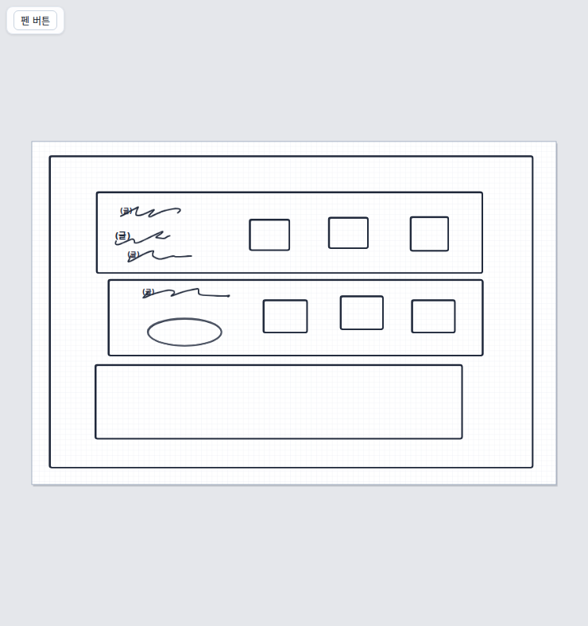
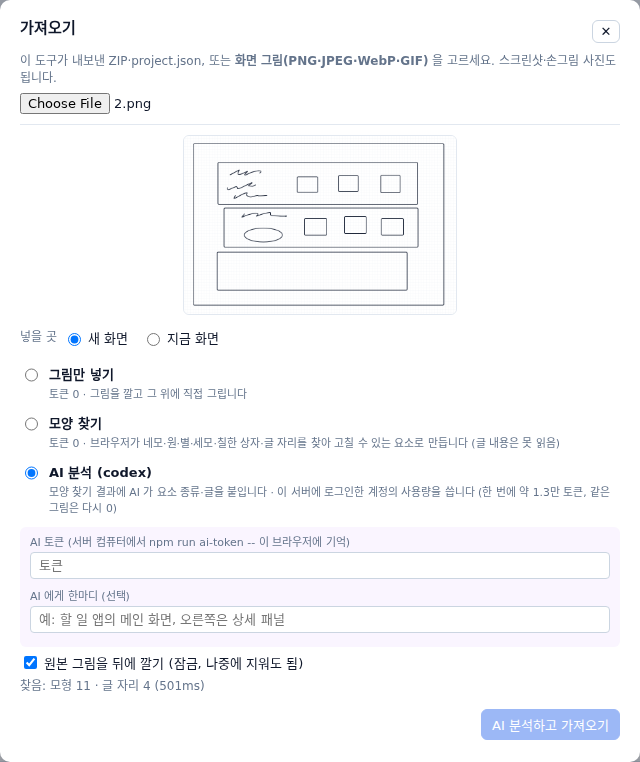

그림과 설명을 ZIP 파일 하나로 묶어 AI 에게 건네고, 백업한 파일을 다시 엽니다
한눈에 보기
따라 하기 · 1 / 10


따라 하기 · 2 / 10
| 전달 방식 | 언제 |
|---|---|
| 단독 | AI 에게 그대로 건넬 때 (기본) |
| dev-process-light | dev-process-light 로 개발할 때 -- 작업 카드 초안이 함께 들어감 |
| 전문판 (전달 초안) | 전문판 개발 흐름용 초안 (완전히 맞지는 않을 수 있음) |
따라 하기 · 3 / 10
따라 하기 · 4 / 10

파일 이름: 프로젝트 이름 · 저장 번호 · 전달 방식 (예: …-r1-standalone.zip)
알아 두기
따라 하기 · 5 / 10

따라 하기 · 6 / 10
따라 하기 · 7 / 10

따라 하기 · 8 / 10
| 버튼 | 결과 |
|---|---|
| 새 프로젝트로 가져오기 | 따로 하나 더 생김 (기본). 같은 것이 있으면 이름 뒤에 (가져옴) |
| 열린 프로젝트 덮어쓰기 | 지금 연 같은 프로젝트를 파일 내용으로 바꿈 |
따라 하기 · 9 / 10


| 방법 | 토큰 | 하는 일 |
|---|---|---|
| 그림만 넣기 | 0 | 그림을 깔고 위에 그림 |
| 모양 찾기 | 0 | 네모·원·글 자리를 요소로 |
| AI 분석 | 약 1.3만 | 종류·글까지 채움 |
따라 하기 · 10 / 10

알아 두면 좋은 점